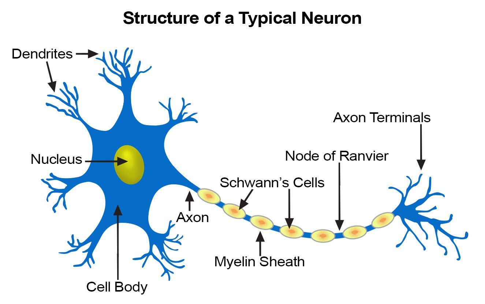

Brain Basics
Terminology
- Superior
- Higher
- Inferior
- Lower
- Anterior
- Toward the front
- Posterior
- Toward the back
- Dorsal
- In humans, Towards the back of the torso
- Ventral
- In humans, towards the front of the torso
- Medial
- Closer to the midline of the body
- Lateral
- Farther from the midline of the body
- Proximal
- Closer to the point of attachment on the torso
- Distal
- Farther from the point of attachment on the torso
- Predecessor Neuron
- The neuron that is connected to the dendrites of the current neuron
- Sucessor Neuron
- The neuron that is connected to the axon terminal of the current neuron
Neuron Anatomy
The human brain is made up of billions of nerve cells called neurons. These neurons communicate through electrical and chemical signals to create all of the advanced cognitive abilities that humans have over animals. A neuron has ten basic components:
- Dendrites
- Nucleus
- Soma (cell body)
- Axon Hillock
- Axon
- Myelin Sheaths
- Schwann's Cells
- Nodes of Ranvier
- Axon Terminal
- Synapse
Dendrites
The dendrite of the neuron are the short extensions of the cell that attach to the soma (cell body). Dendrites are where the cell receives the messages transmitted from the other neurons that it communicates with. A neuron can have any number of dendrites which can all communicate with different neurons.
Nucleus
The nucleus of a neuron is the same as all other cells within the body as it contains the genetic information for the cells encoded in its chromosomes.
Soma (Cell Body)
The soma is the main cell body of the neuron that contains the nucleus of the cell.
Axon Hillock
The axon hillock is the part of the soma that attaches to the axon of the cell. It is the final place in the soma where the receiving input to the neuron can be summed for an output of the current neuron.
Axon
The axon of a neuron is the long slender projection off one side of the cell. The purpose of this part of the cell is to transmit the electrical pulse summed at the axon hillock to the end of the axon so the neuron can communicate with successor neurons.
Myelin Sheaths
Myelin is a lipid (fatty) substance that is formed in the nervous system. Myelin sheaths surround the axon to insulate the axon from losing the electrical signal to the extracellular space ias well as speed up communication between neurons around the body. This becomes extremely important in the neurons that run from your spinal cord down to your toes. If there was no myelin sheaths then there could be a potential lag between wanting to do an action and actually completing that actions.
Schwann's Cells
Schwann’s cells are a form of glial cell which perform supportive duties for the neuron since the neuron itself does not have the ability to anything other than communicate with other neuron
Nodes Of Ranvier
The Nodes of Ranvier are the gaps in the myelin sheath where the axon is exposed to the extracellular space.
Axon Terminal
The axon terminals are the ends of the axon where the electrical signal coming from the axon triggers a chemical reaction for the neuron to be able to communicate with its successor neurons.
Synapse
The synapse the space between the one neuron’s axon terminal and another neuron’s dendrite. This is the site where inter-neuron communication takes place.
Neuronal Communication
Neurons communicate between two main mediums: chemical and electrical in the form of neurotransmitters and action potentials.
Neurotransmitters
Neurotransmitters are the chemical form of communication used in the nervous system for inter-neuron communication. A neuron will release neurotransmitters when the action potential has reached the axon terminal of the cell. The neurotransmitters are then released into the synapse between the to communicate with the successor neuron.
Action Potential
An action potential is electrical form used for intra-neuron communication. An action potential is triggered by neurotransmitters from the predecessor neuron binding with the receptors on the dendrites of the current neuron. The action potential will form at the axon hillock and then travel down the axon until it reaches the axon terminal. Once it reaches the axon terminal, the action potential triggers the release of neurotransmitters from the current neuron to communicate with the successor neuron.
A Detailed Look at Neuronal Communication
If you can understand the two steps above, then you have a pretty broad idea of how neurons communicate in the nervous system. If you are satisfied with this knowledge then go ahead and stop right here and go onto the other sections. However, if you love figuring out how the nitty gritty works, then keep reading. We are gonna take a look at how the mechanics of how neurotransmitters cause action potentials and how action potentials propagate down the axon to cause the release of neurotransmitters. Warning: A basic understanding of charges and chemistry will help with a deeper understanding of this part.
The story starts with a predecessor cell releasing neurotransmitters into the synapse. The neurotransmitter then travel across synapse to bind with the receptors of the current neuron to either directly or indirectly (look up ionotropic and metabotropic receptors for more information) open up an ion channel.
Now, before the story can continue, it needs to be understood all cells, even neurons, have a membrane potential. This means that there is difference in charge on each side of the cell membrane. Most cells have a negative net charge on the inside of their membranes.
When the neurotransmitters open up, it exposes the negative charge inside the membrane to a neutral extracellular space. This negative charge will attract the positive ions in the extracellular matrix to travel into the soma of the neuron. These positive ions collect in the soma and slowly bring the membrane closer to neutral as they travel toward the axon hillock. Once the charge at the axon hillock becomes more positive, it activates the first sodium channel on the axon ( all of the other channels are located in the Nodes of Ranvier). This lets an influx of positive sodium ions into that section of the axon. The positive ions flow down to the next Node of Ranvier where it activates another sodium gate and continues down the rest of the axon. To keep the positive ions flowing in the direction down the axon, calcium gates are activated after the sodium gates close to let positive calcium ions out of the axon and into the extracellular place which creates a state of hyperpolarization ( a negative charge even greater than the resting membrane potential).
As the calcium and sodium make their way down to the axon terminal, the calcium binds with a special receptor in the terminal which is the signal for the neurotransmitters to be produced. Once the neurotransmitters are produced, they are packaged and then transported via vacuoles to the membrane of the terminal. Using exocytosis (expelling contents from the inside of a cell), the neurotransmitters are released into the synapse between the current neuron and the successor neuron. And that's an end to the in depth story of how communication happens in the neuron!